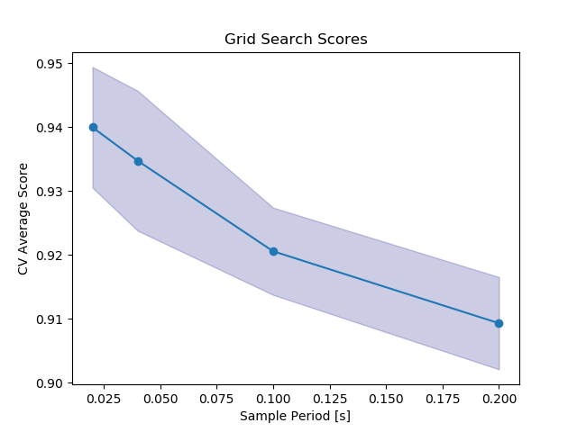

Note
Click here to download the full example code
Resampling Time Series Data¶
This is a basic example using the pipeline to learn resample a time series
This may be useful for resampling irregularly sampled time series, or for determining an optimal sampling frequency for the data
Out:
X Shape: (1625, 100, 5)
N series in train: 105
N series in test: 35
N segments in train: 1625
N segments in test: 604
Accuracy score: 0.75
X Shape: (418, 10, 5)
X Shape: (418, 10, 5)
X Shape: (418, 10, 5)
X Shape: (686, 20, 5)
X Shape: (686, 20, 5)
X Shape: (686, 20, 5)
X Shape: (1488, 50, 5)
X Shape: (1488, 50, 5)
X Shape: (1488, 50, 5)
X Shape: (2832, 100, 5)
X Shape: (2832, 100, 5)
X Shape: (2832, 100, 5)
X Shape: (4248, 100, 5)
# Author: David Burns
# License: BSD
import matplotlib.pyplot as plt
import numpy as np
from sklearn.ensemble import RandomForestClassifier
from sklearn.model_selection import train_test_split, GridSearchCV
from sklearn.preprocessing import StandardScaler
from seglearn.datasets import load_watch
from seglearn.pipe import Pype
from seglearn.split import TemporalKFold
from seglearn.transform import FeatureRep, SegmentX, Interp
def calc_segment_width(params):
# number of samples in a 2 second period
period = params['interp__sample_period']
return int(2. / period)
# seed RNGESUS
np.random.seed(123124)
# load the data
data = load_watch()
X = data['X']
y = data['y']
# I am adding in a column to represent time (50 Hz sampling), since my data doesn't include it
# the Interp class assumes time is the first column in the series
X = np.array([np.column_stack([np.arange(len(X[i])) / 50., X[i]]) for i in np.arange(len(X))])
clf = Pype([('interp', Interp(1. / 25., categorical_target=True)),
('segment', SegmentX(width=100)),
('features', FeatureRep()),
('scaler', StandardScaler()),
('rf', RandomForestClassifier(n_estimators=20))])
# split the data
X_train, X_test, y_train, y_test = train_test_split(X, y, test_size=0.25)
clf.fit(X_train, y_train)
score = clf.score(X_test, y_test)
print("N series in train: ", len(X_train))
print("N series in test: ", len(X_test))
print("N segments in train: ", clf.N_train)
print("N segments in test: ", clf.N_test)
print("Accuracy score: ", score)
# lets try a few different sampling periods
# temporal splitting of data
splitter = TemporalKFold(n_splits=3)
Xs, ys, cv = splitter.split(X, y)
# here we use a callable parameter to force the segmenter width to equal 2 seconds
# note this is an extension of the sklearn api for setting class parameters
par_grid = {'interp__sample_period': [1. / 5., 1. / 10., 1. / 25., 1. / 50.],
'segment__width': [calc_segment_width]}
clf = GridSearchCV(clf, par_grid, cv=cv)
clf.fit(Xs, ys)
scores = clf.cv_results_['mean_test_score']
stds = clf.cv_results_['std_test_score']
plt.plot(par_grid['interp__sample_period'], scores, '-o')
plt.title("Grid Search Scores")
plt.xlabel("Sample Period [s]")
plt.ylabel("CV Average Score")
plt.fill_between(par_grid['interp__sample_period'], scores - stds, scores + stds, alpha=0.2,
color='navy')
plt.show()
Total running time of the script: ( 0 minutes 10.058 seconds)